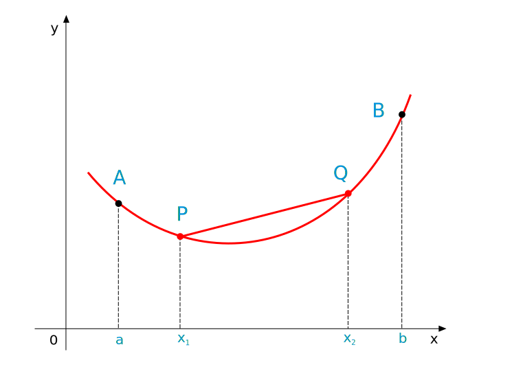
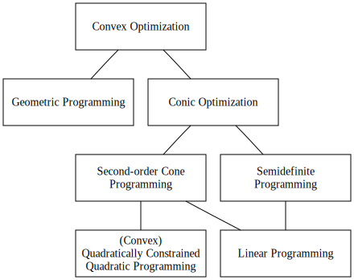
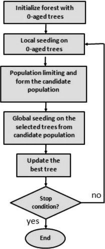

01. Introduction: The What, Why, and How of Convex Optimization
Date: 2025-10-21 · Duration: 90 min · Tags: intro, motivation, overview, modeling
Overview: This foundational lecture introduces the universe of convex optimization. We define what makes a problem "convex," explore why this property is the critical dividing line between computational tractability and intractability, and prove the crown jewel: that any local minimum is also global. We tour the canonical problem families (LP, QP, SOCP, SDP) that power modern applications, introduce the powerful "loss + regularizer + constraints" modeling paradigm, and equip you with the practical skills to read, write, and sanity-check convex programs.
Prerequisites: Lecture 00: Linear Algebra Primer is essential—especially projections, PSD matrices, and norms.
Scope Guard: No deep set theory (that's Lecture 02), no convex-function calculus/epigraphs (that's Lecture 03), and no KKT/duality/algorithms here. This is purely about problem structure, recognition, and formulation.
Connections: The least squares and QP examples draw directly from Lecture 00's projection theory. The feasible sets introduced here motivate Lecture 02's geometric foundations.
Learning Objectives
After this lecture, you will be able to:
- Define Convex Problems: Articulate the precise three-part definition and distinguish convex from nonconvex problems.
- Prove Global Optimality: Walk through the rigorous proof that every local minimum is global, and explain why this property is transformative.
- Recognize Canonical Families: Identify LP, QP, SOCP, SDP by sight and know which real-world scenarios each family models.
- Apply Loss + Regularizer Paradigm: Formulate problems using the "loss + regularizer + constraints" template and explain the bias-variance tradeoff.
- Use Safe Rewrites: Transform norms, absolute values, and max functions into standard convex forms.
- Formulate and Sanity-Check: Translate real-world problems to mathematical form, verify feasibility, and check for unboundedness.
- Understand the Solver Workflow: Grasp the "formulate → canonicalize → solve → verify" pipeline.
1. What is a Convex Optimization Problem?
In the vast landscape of optimization, problems divide into two categories: convex and nonconvex. This is not arbitrary—it's the fundamental line between problems we can solve efficiently and reliably, and those we generally cannot.

Figure 1.1: The optimization landscape—convex vs. nonconvex problems.
Formal Definition
An optimization problem is convex if it can be written as:
$$
\begin{aligned}
\min_{x \in \mathbb{R}^n} \quad & f_0(x) && \text{(Objective)} \\
\text{subject to} \quad & f_i(x) \le 0, && i=1,\dots,m \quad \text{(Inequalities)}\\
& Ax = b && \text{(Equalities)}
\end{aligned}
$$
where three critical conditions are met:
- The objective $f_0$ is a convex function
- All inequality constraints $f_i$ are convex functions
- All equality constraints are affine (i.e., $Ax = b$)
💡 Key Insight
This structure guarantees two profound properties:
- The feasible set (all points satisfying constraints) is a convex set
- Every local minimum is a global minimum (the crown jewel!)
Notation You'll See Everywhere
- Componentwise inequalities: $x \ge 0$ means $x_i \ge 0$ for all $i$; $x \le y$ means $x_i \le y_i$ for all $i$
- Symmetric matrices: $\mathbb{S}^n = \{X \in \mathbb{R}^{n \times n} \mid X = X^\top\}$
- PSD notation (Loewner order): $X \succeq 0$ means $v^\top X v \ge 0$ for all $v$ (from Lecture 00)
- Norm constraints: $\|x\|_p \le r$ defines a convex feasible set

Figure 1.2: A convex function—the line segment between any two points lies above the graph.
Interactive Explorer: Convex vs. Nonconvex Functions
Build intuition for convexity. A function is convex if the line segment connecting any two points on its graph lies on or above the graph (Jensen's inequality). Explore different functions and see this property visualized.
The Crown Jewel: Every Local Minimum is Global
This is the single most important property of convex optimization problems. In nonconvex optimization, algorithms can get "stuck" in local minima that are not globally optimal. Convexity eliminates this fundamental difficulty.
Proof that any local minimum is a global minimum
The proof is by contradiction. Assume that $x^*$ is a local minimum but not a global one. This means there is a feasible point $y$ such that $f_0(y) < f_0(x^*)$.
Since the feasible set is convex, the line segment between $x^*$ and $y$, given by $z(\theta) = \theta y + (1-\theta)x^*$ for $\theta \in [0,1]$, is entirely within the feasible set.
By the convexity of the objective function, we have:
$$ f_0(z(\theta)) \le \theta f_0(y) + (1-\theta)f_0(x^*) $$
Since $f_0(y) < f_0(x^*)$, we can write:
$$ f_0(z(\theta)) < \theta f_0(x^*) + (1-\theta)f_0(x^*) = f_0(x^*) $$
For small enough $\theta > 0$, the point $z(\theta)$ is arbitrarily close to $x^*$. However, we have shown that the function value at this nearby point is strictly less than at $x^*$, which contradicts the assumption that $x^*$ is a a local minimum. Thus, our initial assumption must be false.

Figure 1.3: Animation showing how the chord (line segment) between any two points stays above a convex function.
Interactive Visualization: Global vs. Local Minima
Experience the proof visually. For a convex function (shaped like a bowl), any marble you drop rolls to the same unique bottom—the global minimum. For a nonconvex function, the marble gets stuck in local valleys.
Why Convexity Matters
- Tractability: Polynomial-time algorithms exist for many convex classes
- Predictability: No local traps—optimization is reliable
- Powerful Geometry: Rich theory in Lecture 02
- Rich Function Calculus: Composition rules in Lecture 03
2. Canonical Convex Problem Families
Just as linear algebra has standard factorizations (LU, QR, SVD), convex optimization has canonical "problem dialects." A vast number of real-world models reduce to one of these four families. Recognizing them is a crucial modeling skill.

Figure 2.1: The hierarchy of convex optimization problems—each level generalizes the previous.
2.1 Linear Program (LP)
Standard Form:
$$ \min_x\ c^\top x \quad \text{s.t. } Ax \le b, \quad Fx = g $$
What it is: Objective and all constraints are affine functions. The simplest convex form.
Geometric Intuition: Finding the lowest point in a polyhedron (the feasible set) along direction $-c$. The minimum occurs at a vertex.
Real-World Example: Resource Allocation (Factory Production)
A factory produces $n$ products using $m$ raw materials.
- Variables: $x_j$ = units of product $j$ to produce
- Objective: Maximize profit $\sum_j p_j x_j$ (or minimize $-\sum_j p_j x_j$)
- Constraints:
- $A_{ij}$ = units of material $i$ needed for product $j$
- $S_i$ = available supply of material $i$
- Material limits: $\sum_j A_{ij} x_j \le S_i$ for each material $i$
- Non-negativity: $x_j \ge 0$
This is the bedrock of operations research and supply chain optimization.
2.2 Quadratic Program (QP)
Standard Form:
$$ \min_x\ \frac{1}{2} x^\top Q x + c^\top x \quad \text{s.t. } Ax \le b, \quad Fx = g, \quad Q \succeq 0 $$
What it is: Convex quadratic objective with linear constraints. Convexity requires $Q \succeq 0$ (from Lecture 00).
Geometric Intuition: Level sets of objective are concentric ellipsoids. Finding the smallest ellipsoid that touches the feasible polyhedron.
Real-World Example: Markowitz Portfolio Optimization
An investor allocates capital among assets to minimize risk for a target return.
- Variables: $w$ = portfolio weights for each asset
- Objective: Minimize variance (risk) $w^\top \Sigma w$, where $\Sigma$ is the covariance matrix of returns. Since $\Sigma$ is a covariance matrix, it's PSD, making the objective convex.
- Constraints:
- $\mu$ = expected returns vector
- Target return: $\mu^\top w \ge R_{\text{target}}$
- Budget: $\mathbf{1}^\top w = 1$
- Optional: $w \ge 0$ (no short-selling)
This is the cornerstone of modern portfolio theory and quantitative finance.
🔗 Connection to Lecture 00
The least squares problem from Lecture 00 is a QP with no constraints. The normal equations $A^\top A x = A^\top b$ arise from the optimality condition $\nabla f(x) = 0$ for the quadratic $f(x) = \frac{1}{2}\|Ax - b\|_2^2$.
2.3 Second-Order Cone Program (SOCP)
Standard Form:
$$ \min_x\ c^\top x \quad \text{s.t. } \|A_i x + b_i\|_2 \le c_i^\top x + d_i, \ i=1,\dots,k, \quad Fx = g $$
What it is: Linear program with additional second-order cone constraints (Euclidean norm constraints).
Geometric Intuition: Feasible set is the intersection of a polyhedron with one or more second-order cones (ice cream cones).
Real-World Example: Robust Least Squares
We want to solve least squares, but there's uncertainty in the data matrix $A$. Assume the "true" matrix lies within an ellipsoid around our measured $A_0$.
The worst-case formulation:
$$ \min_x \max_{\|\Delta\|_2 \le \rho} \|(A_0 + \Delta)x - b\|_2 $$
This reduces to the SOCP:
$$ \min_x\ \|A_0 x - b\|_2 + \rho \|x\|_2 $$
This provides a solution robust to measurement errors—critical in engineering and signal processing.
2.4 Semidefinite Program (SDP)
Standard Form:
$$ \min_X\ \langle C, X \rangle \quad \text{s.t. } \langle A_i, X \rangle = b_i, \ i=1,\dots,m, \quad X \succeq 0 $$
where $\langle C, X \rangle = \mathrm{Tr}(C^\top X)$ is the matrix inner product (from Lecture 00).
What it is: The variable $X$ is a symmetric matrix constrained to be positive semidefinite.
Geometric Intuition: Feasible set is the intersection of an affine subspace with the PSD cone $\mathbb{S}^n_+$.
Real-World Example: Minimum Volume Enclosing Ellipsoid (MVEE)
Given points $\{p_1, \dots, p_k\}$, find the smallest-volume ellipsoid containing all of them.
An ellipsoid is $\mathcal{E} = \{x \mid (x - x_c)^\top P^{-1} (x - x_c) \le 1\}$ for $P \succ 0$. Volume is proportional to $\det(P)^{1/2}$.
The MVEE problem can be formulated as an SDP and arises in outlier detection, robust statistics, and experimental design.
Interactive Guide: Problem Classification Flowchart
Recognizing these canonical forms takes practice. Use this interactive flowchart to classify problems by answering questions about objectives and constraints.

Figure 2.2: The iterative nature of optimization algorithms—initialize, evaluate, improve, repeat.
3. Modeling Patterns: Loss + Regularizer + Constraints
A vast number of problems in statistics, machine learning, and signal processing fit the remarkably versatile blueprint:
$$
\min_x \quad \underbrace{\text{loss}(x; \text{data})}_{\text{Data Fidelity}} + \underbrace{\lambda \cdot \text{regularizer}(x)}_{\text{Model Complexity}}
\quad \text{s.t.} \quad \text{simple convex constraints}
$$
This framework balances two competing goals:
- Data Fidelity (Loss): Measures how well the model fits observed data
- Model Simplicity (Regularizer): Penalizes complexity to prevent overfitting
The hyperparameter $\lambda \ge 0$ controls the tradeoff. The sum of two convex functions is convex, so these problems are efficiently solvable.
The Bias-Variance Tradeoff
The statistical motivation:
- High bias (underfit): Model too simple, misses structure in data
- High variance (overfit): Model too complex, fits noise instead of signal
Regularization introduces controlled bias to dramatically reduce variance, improving generalization to new data.
Common Convex Loss Functions
- Least Squares: $\frac{1}{2}\|Ax - b\|_2^2$ — for regression; assumes Gaussian noise
- $\ell_1$ Regression: $\|Ax - b\|_1$ — robust to outliers
- Logistic Loss: $\sum_i \log(1 + \exp(-y_i a_i^\top x))$ — binary classification; Bernoulli likelihood
- Hinge Loss: $\sum_i \max(0, 1 - y_i(w^\top x_i + b))$ — Support Vector Machines
Common Convex Regularizers
- Ridge ($\ell_2$): $\frac{\lambda}{2} \|x\|_2^2$ — shrinks coefficients toward zero; encourages small, diffuse values
- LASSO ($\ell_1$): $\lambda \|x\|_1$ — promotes sparsity (many exact zeros); performs automatic feature selection
- Elastic Net: $\lambda_1 \|x\|_1 + \lambda_2 \|x\|_2^2$ — combines both
- Nuclear Norm: $\|X\|_* = \sum_i \sigma_i(X)$ — promotes low-rank matrices
⚡ Why LASSO Promotes Sparsity
The $\ell_1$ "ball" has sharp corners at the coordinate axes. When the contours of the loss function first touch the $\ell_1$ constraint region, they often hit at a corner—where many coordinates are exactly zero. This geometric property makes LASSO invaluable for high-dimensional problems.
Common Convex Constraints
- Box: $\ell \le x \le u$ (componentwise bounds)
- Probability Simplex: $\mathbf{1}^\top x = 1, \ x \ge 0$
- Budget/Robust: $\|Px\|_2 \le r$ or $\|x\|_\infty \le r$
- Matrix PSD: $X \succeq 0$ (for covariance/Gram matrices)
We'll prove why these are all convex in Lectures 02 and 03. For now, trust the labels and learn to recognize them.
4. Core Examples You'll Actually Use
4.1 Least Squares (LS)
$$ \min_x\ \frac{1}{2} \|Ax - b\|_2^2 $$
Convex QP. Solution is the orthogonal projection from Lecture 00: $x^* = (A^\top A)^{-1} A^\top b$ (if $A$ has full column rank).
Ridge Regression: Add $\frac{\lambda}{2}\|x\|_2^2$ to get regularized LS—still a QP, but now always solvable even when $A$ is rank-deficient.
4.2 LASSO
$$ \min_x\ \frac{1}{2} \|Ax - b\|_2^2 + \lambda \|x\|_1 $$
Convex (sum of convex terms). Widely used for sparse recovery and feature selection in high-dimensional statistics.
4.3 Logistic Regression (Regularized)
$$ \min_x\ \sum_{i=1}^m \log(1 + \exp(-y_i a_i^\top x)) + \lambda \|x\|_2^2 $$
Convex; the workhorse for binary classification in machine learning. With $\|x\|_1$ regularization: sparse logistic regression.
4.4 Support Vector Machine (Soft Margin)
$$ \min_{w, b, \xi \ge 0}\ \frac{1}{2} \|w\|_2^2 + C \sum_i \xi_i \quad \text{s.t.} \quad y_i(w^\top x_i + b) \ge 1 - \xi_i $$
Convex QP. The slack variables $\xi_i$ allow misclassification; hinge loss is implicit in the constraints.
4.5 Chebyshev (Minimax) Approximation
$$ \min_{x, t}\ t \quad \text{s.t.} \quad -t \le (Ax - b)_i \le t, \quad \forall i $$
LP formulation via $\ell_\infty$ norm. Classic for uniform-error fitting (e.g., filter design).
4.6 Robust Least Squares (SOCP Form)
Uncertain $A$ in an ellipsoid. Worst-case formulation reduces to:
$$ \min_x\ \|A_0 x - b\|_2 + \rho \|x\|_2 $$
This is SOCP-representable and critical for applications with measurement uncertainty.
5. Reading and Writing Problems Cleanly
5.1 Variables, Parameters, Data
- Variables: What you optimize over (e.g., $x$)
- Parameters: Symbols you may change between runs (e.g., $\lambda$)
- Data: Fixed for a given run (e.g., $A, b$)
Always declare dimensions and units. Keep scaling reasonable (recall Lecture 00's condition number sanity).
5.2 Sanity Checks Before Solving
- Is the feasible set nonempty? Trivial constraints can make it empty.
- Are quantities finite? Avoid divide-by-zero, log of nonpositive, etc.
- Is the problem obviously unbounded? E.g., minimize $c^\top x$ with $c \neq 0$ and no lower bound.
5.3 Canonicalization (Mental Model)
Under the hood, DSLs (Domain-Specific Languages like CVXPY, JuMP) rewrite your model into a cone program. The journey:
"Math-like model" → "Cone program" (LP/QP/SOCP/SDP) → "Solver"
You don't need to do this manually—just understand the pipeline exists.
6. Micro-Library of Safe Rewrites
These are modeling moves you can use now. We'll justify them rigorously in Lectures 02-03.
Absolute Value and $\ell_1$ Norm
To model $\min |x|$ or $\min \|x\|_1$:
- Introduce auxiliary variable $u \ge 0$
- Constrain $-u \le x \le u$
- Minimize $u$ (or $\mathbf{1}^\top u$ for vector $x$)
$\ell_\infty$ Bound
$\|x\|_\infty \le t$ is equivalent to $-t\mathbf{1} \le x \le t\mathbf{1}$ (componentwise).
$\ell_2$ Bound (Second-Order Cone)
$\|Px + q\|_2 \le t$ is SOCP-ready. Many solvers accept this directly.
Piecewise-Linear Max
To model $t \ge \max_i (a_i^\top x + b_i)$:
Use constraints $t \ge a_i^\top x + b_i$ for all $i$, then minimize $t$.
Quadratic Objectives
$\frac{1}{2}x^\top Q x$ with $Q \succeq 0$ is convex. Many solvers (like OSQP, CVXOPT) accept QPs directly.
Pro Tip: Keep transformations minimal. Over-modeling (introducing unnecessary auxiliary variables) can slow solvers.
7. Tiny "Hello, DSL" Pseudocode Example
Just to anchor the workflow—no need to run this now. This is CVXPY-style pseudocode:
# Variables
x = Variable(n)
# Data/Parameters
A, b = ... # data matrices/vectors
lam = ... # regularization parameter
# Objective: Least Squares + L1 Regularization
obj = Minimize(0.5 * sum_squares(A @ x - b) + lam * norm1(x))
# Constraints: Box and Simplex
constraints = [x >= 0, sum(x) == 1]
# Solve
Problem(obj, constraints).solve()
# Access solution
print(x.value)
Mentally, this becomes a QP (or SOCP) under the hood, then gets routed to an appropriate solver.
8. Problem Set (with Solutions)
P1.1 — Classify as Convex / Not Convex
One-liner justification for each:
- $\min \|Ax - b\|_2^2$ s.t. $Fx = g$
- $\min -\|x\|_2$ s.t. $Ax \le b$
- $\min \|x\|_1$ s.t. $\|Bx - c\|_\infty \le 1$
- $\min x^\top Q x$ s.t. $Dx \le e$, where $Q \succeq 0$
- $\min \|x\|_2^2$ s.t. $x_i \in \{0, 1\}$
Solutions
- Convex. Quadratic objective + affine equality.
- Not Convex. $f(x) = -\|x\|_2$ is concave (minimizing concave = nonconvex).
- Convex. $\|x\|_1$ convex; $\|Bx - c\|_\infty$ convex (composition with affine).
- Convex. $Q \succeq 0$ makes $x^\top Q x$ convex; linear inequalities are convex.
- Not Convex. Integrality constraints $x_i \in \{0,1\}$ destroy convexity (discrete set).
P1.2 — Chebyshev Fitting as an LP
Show that $\min_x \|Ax - b\|_\infty$ is equivalent to:
$$ \min_{x, t}\ t \quad \text{s.t.} \quad -t\mathbf{1} \le Ax - b \le t\mathbf{1} $$
Solution
$\|u\|_\infty \le t$ if and only if $-t \le u_i \le t$ for all $i$. Substituting $u = Ax - b$ gives the LP formulation.
P1.3 — Ridge vs. LASSO Geometry
In one sentence, why does ridge shrink but not zero coefficients, while LASSO promotes sparsity?
Solution
Ridge ball ($\|x\|_2 \le t$) is round; LASSO ball ($\|x\|_1 \le t$) is pointy at axes. Loss contours first touch LASSO ball at corners → exact zeros (sparsity).
P1.4 — Simplex-Constrained LS
Formulate $\min \|Ax - b\|_2^2$ s.t. $\mathbf{1}^\top x = 1, x \ge 0$. Is it convex?
Solution
Yes, convex. QP objective + affine equality + linear inequalities (nonnegativity).
P1.5 — Logistic with $\ell_1$ Regularization
Write the objective for binary labels $y_i \in \{\pm 1\}$ with $\ell_1$ regularization.
Solution
$$ \min_x\ \sum_{i=1}^m \log(1 + \exp(-y_i a_i^\top x)) + \lambda \|x\|_1 $$
No extra constraints needed.
9. Pocket Card Summary (What to Remember)
- "Convex problem" = convex objective + convex ($\le 0$) constraints + affine equalities
- Crown jewel: Every local minimum is global
- Recognize on sight: LP, QP, SOCP, SDP (most models reduce to one)
- Blueprint: loss + regularizer + simple convex constraints
- Safe rewrites: $\ell_1$, $\ell_\infty$, $\ell_2$ bounds; max via epigraph; PSD as constraint
- Workflow: Formulate cleanly → (optionally canonicalize) → solve → sanity-check
- Sanity checks: Nonempty feasible set? Finite quantities? Not obviously unbounded?
Real-World Application Gallery
The canonical forms and paradigms are not abstract—they solve real problems across domains.
Interactive Problem Gallery
Filter by domain, category, or keyword to explore applications in finance, healthcare, robotics, ML, and more.
Additional Tools: Convex Combination & Convergence
Explore how convex combinations work and compare convergence rates of different algorithms.
Readings & Resources
- Required: Boyd & Vandenberghe, Convex Optimization, Chapter 1 — canonical introduction to the field
- Solver Documentation: CVXPY (Python), JuMP (Julia) — DSLs for convex programming
- Further Exploration: Nocedal & Wright, Numerical Optimization — context for why convex is special
- Applications: Hastie, Tibshirani & Friedman, The Elements of Statistical Learning — ridge, LASSO, regularization theory